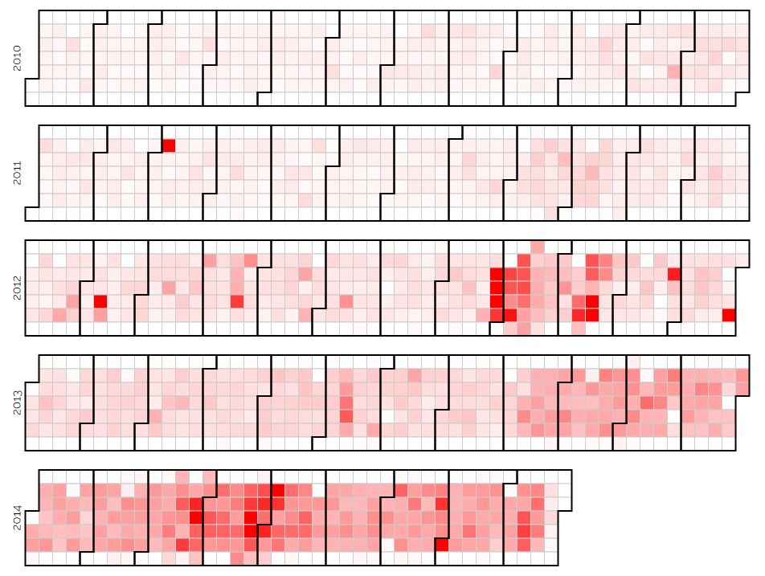
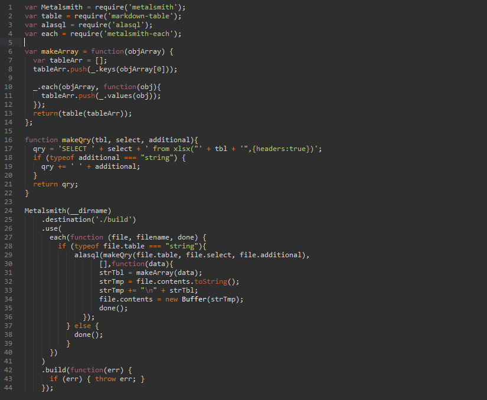
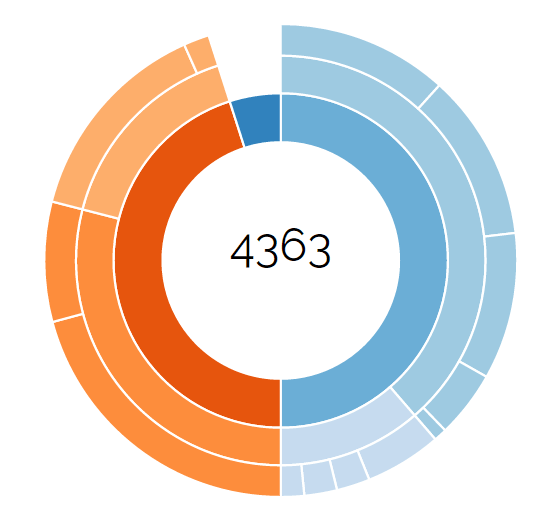
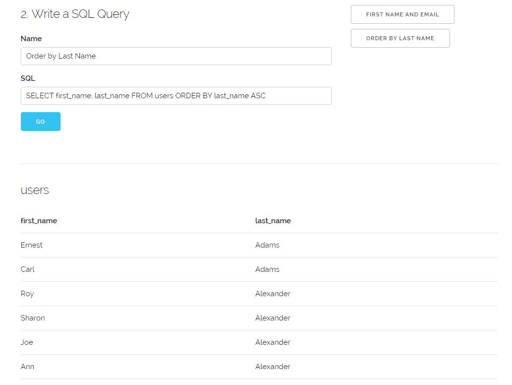
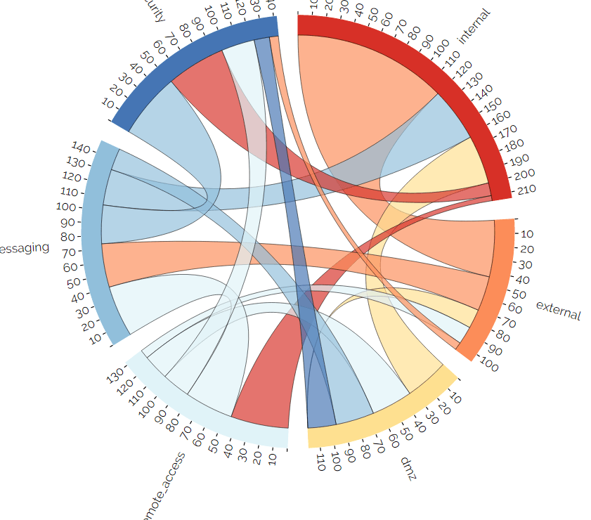
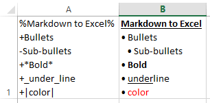
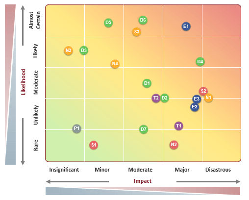
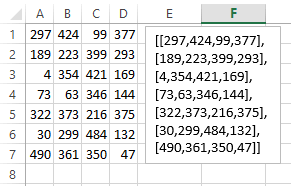

Projects
Honor Yoga Studio
Website created for Honor Yoga Studio in Graham, TX. The website utilizes Skeleton CSS framework, and features a dynamic schedule powered by Google Calendar and CLNDR. The schedule is updated directly through Google Calendar, and other parts of the website can be edited through the admin interface (powered by CockpitCMS).
Example Github


Metalsmith.js Excel MD Tables
Metalsmith.js plugin that integrates AlaSQL, and provides an easy way to query excel files and automatically convert them to Markdown. From there, it is easy to integrate with other Metalsmith plugins to create webpages or reports.
Github





